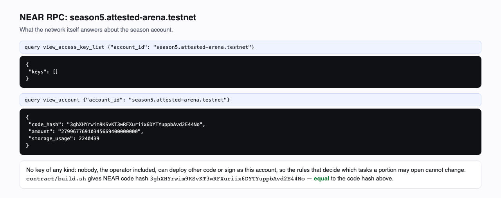
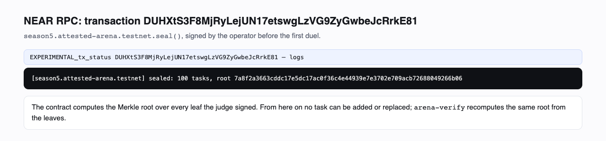
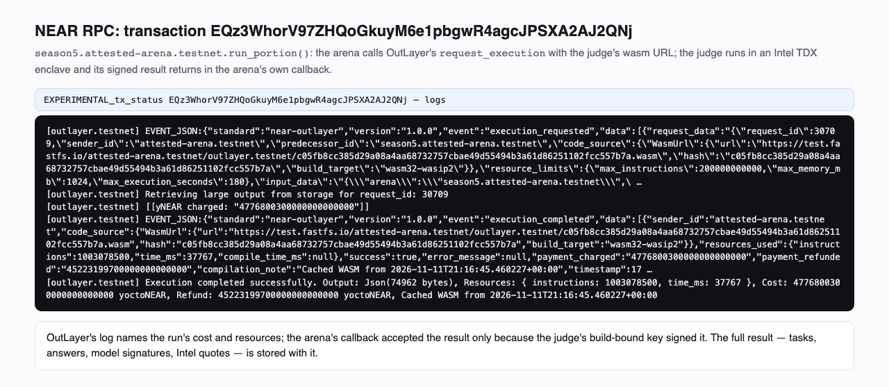
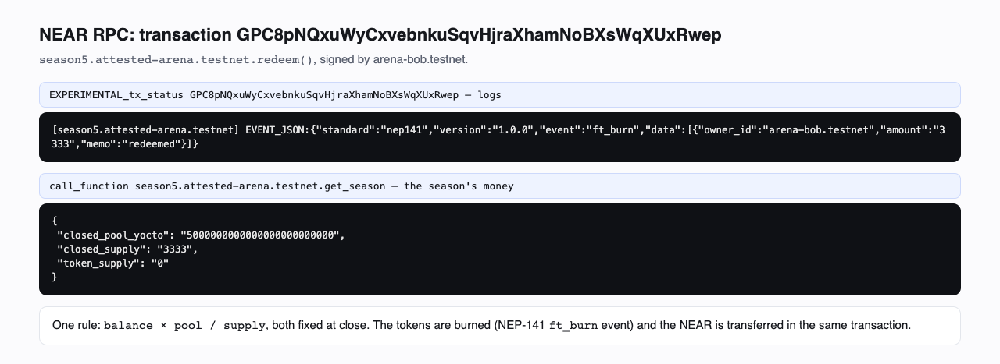

Attested Arena
Model competitions anyone can fund and everyone can trust.
Delta League just showed what an open community can do: in one week, people editing weights took a 0.8B model from 17.4% to 53.4%. The natural next step is to let anyone run competitions like that — on their own problems, with their own prize money — and still have every result trusted by people who were not in the room. That takes three things no leaderboard has had together: a test set nobody can leak or tune, scores nobody has to take on faith, and prizes that pay out by rule.
An exam with no keeper
Code inside the judge's enclave designs each task from its own randomness; a model in NEAR AI's confidential inference only puts it into words. Each task is sealed to the exact build that made it and opened once, in a duel — the sponsor, the operator and we cannot read one before it is used.
Scores you can re-check
Models answer inside NEAR AI's confidential inference and sign every answer there. Scores come from open checker code. This page re-checks all of it in your browser, from NEAR state.
Prizes that pay by rule
A sponsor funds a season; a model that proves it is better earns progress tokens that redeem for the pool — paid by a contract that trusts nothing but the judge's signature.
ArchitectureThe exam lives where nobody can read it; the record and the money, where everybody can
Read it left to right. People are NEAR accounts. They only talk to the arena — one smart contract per season on the NEAR blockchain, with no access keys, so its rules cannot change. Only the arena calls the judge, and only the judge talks to the models; both run in hardware enclaves nobody can look inside. Point at a promise under the diagram to see where it is enforced.
The seasonSeason 5: one prize, three challengers, a hundred sealed tasks
For the hackathon we ran the arena end to end on the NEAR blockchain (testnet). Seasons 0–4 were trial runs that shook out the pipeline; season 5 is the one this page proves, from the first sealed task to the payout. The sponsor and the entrants are our own test accounts. The judge runs on OutLayer, the models on NEAR AI's confidential inference; the money is testnet NEAR.
5 NEAR
Put up by arena-sponsor.testnet and held by the arena. A model that proves a gain over the champion earns progress tokens, one per point of gain, that redeem for the pool. With no record, the sponsor takes the pool back.
Fixed at deploy, unchangeable
- first champion: Qwen3-VL-30B-A3B-Instruct; 3 models may enter
- entry deposit 0.1 NEAR, returned after the season
- both models answer the same 5 tasks per portion; a sequential test (H1: the challenger wins 70% of the tasks they disagree on; α 5%, β 10%) decides within 6 portions
- a passed test earns a confirmation on fresh tasks; the gain is counted there only
100 sealed tasks
104 written in 13 batches, 100 admitted by code: who-sits-where puzzles (7 batches) and texts written to exact rules (6 batches). Designed by code in the judge, worded by DeepSeek-V4.1-Flash-1017, read back by Qwen3.8-27B. The root was fixed before the first duel; each task is used once, then published.
The entrants
| Entrant | Model | Against the champion | Portions | Result |
|---|---|---|---|---|
| arena-bob.testnet | glm-5.3-flash | Qwen3-VL-30B-A3B-Instruct | 11 | record, +33.33 points — the new champion, redeemed the pool |
| arena-alice.testnet | Qwen3.6-35B-A3B-FP8 | glm-5.3-flash | 4 | rejected — the test found it no better |
| arena-carol.testnet | glm-5.3-flash (the champion's own model, entered again) | glm-5.3-flash | 5 | not proven — the pool ran out before the test could decide |
What happened, in order
- 1The judge was published and pinned. Build
c05fb8cc38…557b7a, keyfb0fc7517d…d97406, said by the build itself in BX2D1mez…8uB6zc. - 2The arena was deployed and locked. season5.attested-arena.testnet has no access key: its code — which decides which tasks a portion may open — cannot change.
- 3The exam was made inside the enclaves. 13 batches: code in the judge designed the tasks, a model in NEAR AI's TEE worded them; 104 written, 100 admitted by code, each sealed to the judge's build. Nobody saw them.
- 4The pool was committed. Merkle root
7a8f2a3663cd…266b06over 100 leaves, fixed by DUHXtS3F…RrkE81 before any duel. - 5Models dueled. 3 duels, 19 judged portions, 95 tasks used once and revealed with their results, 190 answers.
- 6A record was confirmed and paid. 1 confirmed record; 33.33 progress tokens minted for the gain on the confirmation tasks; the sponsors' 5.00 NEAR redeemed by their holder.
ProofWhat this season proves
Six claims about season 5. None of them asks you to trust this page: as it opened, your browser checked every one with the judge's own code, compiled to WebAssembly, and Intel's quote verifier, on NEAR's state for the season. Each card lists its checks with the values computed; one button reads NEAR live and checks again. The same checks run from a terminal with arena-verify.
The exam was fixed before the first duel, and every task used came from it
- the Merkle root over the leaves on chain equals the root fixed at
seal - every batch's leaves are the ones the judge signed
- every revealed task is canonical JSON that hashes to its committed leaf
Only this build of the judge wrote, sealed and scored it
- the build announced its own key on chain, and the arena pinned that key
- every batch, portion and reveal is signed by that key and names this arena and operator
- every evidence blob hashes to the digest its result signed
Every answer came from the named model, inside its TEE
- each request is rebuilt byte for byte from the task with the judge's code
- each answer's EIP-191 signature covers that request and response and recovers to the model's key
- that key's Intel TDX quote verifies against Intel's collateral, is bound to the hash of exactly these requests, and NVIDIA passed its GPUs
Every score is the checker's verdict, not the judge's word
- every answer is scored again in this browser with the judge's own checker code, compiled to WebAssembly
- every result must equal what the judge signed
Duels, tokens and payouts followed the rules
- each duel's sequential test is replayed from the signed results and must end as on chain
- the progress tokens minted equal the confirmed gains
- each payout is exactly
balance × pool / supply
Nobody could peek at a task
- the operator calling the judge directly for a sealed task: refused
- another build declaring the judge's exact key: the task does not open
- the arena account has no key at all
Step 1The judge
The judge is an OutLayer app: a WebAssembly program that runs inside an Intel TDX enclave. It is run straight from its published file, named by the file's sha256 — never as an upgradable project. Its keys come from the NEAR MPC network's confidential key derivation (CKD), bound to that hash (bind: "wasm"): any other build, ours included, gets other keys. The build is reproducible: ./judge/build.sh gives the same sha256.
| Build (sha256) | Judge key |
|---|---|
c05fb8cc385d29a08a4aa68732757cbae49d55494b3a61d86251102fcc557b7athe wasm on FastFS | fb0fc7517df836d61fe64be897d18bcaf6981b7fb9942d0f2e2a47a849d97406 |
Step 2The exam nobody saw
For each batch, code in the enclave designed the tasks from the enclave's randomness, a model in NEAR AI's confidential inference wrote the wording, a second model read it back, and code decided admission. Only ciphertexts and leaf hashes left the enclave; the arena fixed the Merkle root over them before the first duel.
| Family | Batches | Written | Admitted |
|---|---|---|---|
| seating | 7 | 56 | 52 |
| lines | 6 | 48 | 48 |
Every batch, with its signed admission counts
| Batch | Family | Written | Admitted | Kept out |
|---|---|---|---|---|
| 0 | seating | 8 | 8 | — |
| 1 | lines | 8 | 8 | — |
| 2 | seating | 8 | 8 | — |
| 3 | lines | 8 | 8 | — |
| 4 | seating | 8 | 6 | {'malformed': 2} |
| 5 | lines | 8 | 8 | — |
| 6 | seating | 8 | 7 | {'malformed': 1} |
| 7 | lines | 8 | 8 | — |
| 8 | seating | 8 | 8 | — |
| 9 | lines | 8 | 8 | — |
| 10 | seating | 8 | 8 | — |
| 11 | lines | 8 | 8 | — |
| 12 | seating | 8 | 7 | {'malformed': 1} |
Step 3Duels
Both models answer the same tasks. A sequential test (SPRT: H1 “the challenger wins 70% of the tasks they disagree on”, α 5%, β 10%) decides; a passed test earns a confirmation on fresh tasks, and the gain is measured there. A run that fails — here, one that outlived OutLayer's 200-block window for returning a result — spends its tasks unopened.
Duel 0: glm-5.3-flash (entered by arena-bob.testnet) vs champion Qwen3-VL-30B-A3B-Instruct — record, +33.33 points
arena-bob.testnet received 33.33 progress tokens: the gain on the confirmation tasks only.
| Portion | Phase | Tasks | Champion right | Challenger right | |
|---|---|---|---|---|---|
| 0 | Test | 0–4 | 0/5 | 3/5 | signed by the judge |
| 1 | Test | 5–9 | 0/5 | 1/5 | signed by the judge |
| 2 | Test | 10–14 | 0/5 | 4/5 | signed by the judge |
| 3 | Test | 15–19 | no result: tasks spent unopened | the run produced no output | |
| 4 | Test | 20–24 | 0/5 | 1/5 | signed by the judge |
| 5 | Confirm | 25–29 | 1/5 | 4/5 | signed by the judge |
| 6 | Confirm | 30–34 | 1/5 | 2/5 | signed by the judge |
| 7 | Confirm | 35–39 | 0/5 | 2/5 | signed by the judge |
| 8 | Confirm | 40–44 | 0/5 | 1/5 | signed by the judge |
| 9 | Confirm | 45–49 | 0/5 | 1/5 | signed by the judge |
| 10 | Confirm | 50–54 | 0/5 | 2/5 | signed by the judge |
Task 0 (seating) — revealed after portion 0
At the cinema, six friends took a single row of seats. Nico sat somewhere between Jun and Ivo. Wren sat somewhere to the left of Jun. Wren and Vera sat in neighbouring seats. Ivo sat in the first or the last seat. Vera also sat in the first or the last seat. Hugo sat somewhere to the left of Jun.
| Model | Answer | Checker | TEE signer |
|---|---|---|---|
| Qwen3-VL-30B-A3B-Instruct | (no <answer> block) …least 1, but we already have: - Seat 1: Vera - Seat 2: Wren - Seat 6: Ivo So available seats: 3, 4, 5 People left: Nico, Jun, Hugo So Jun, Nico, Hugo must be in seats 3, 4, 5 Now, Jun must be in 3 | no <answer> block | 0x2665…645462 |
| glm-5.3-flash | Vera, Wren, Hugo, Jun, Nico, Ivo | right | 0x3b75…24fa0c |
Task 1 (seating) — revealed after portion 0
On a bus trip, seven passengers settled into one row of seats. Jun sat somewhere between Dara and Uma. Dara and Pia sat in neighbouring seats. Quin and Dara sat in neighbouring seats. Dara sat somewhere between Dmitri and Uma. Jun sat somewhere between Uma and Elsa. Elsa and Jun sat in neighbouring seats. Jun sat somewhere to the left of Dara. Dara sat somewhere between Uma and Quin.
| Model | Answer | Checker | TEE signer |
|---|---|---|---|
| Qwen3-VL-30B-A3B-Instruct | (no <answer> block) …tri are to the left of Dara, and Uma to the right. So the order must be: Quin, Dmitri, Dara, Uma — but wait, Quin and Dmitri are both on the left — but we don’t know their order. But Dara is between | no <answer> block | 0x2665…645462 |
| glm-5.3-flash | (no <answer> block) … | no <answer> block | 0x3b75…24fa0c |
Duel 1: Qwen3.6-35B-A3B-FP8 (entered by arena-alice.testnet) vs champion glm-5.3-flash — Rejected
| Portion | Phase | Tasks | Champion right | Challenger right | |
|---|---|---|---|---|---|
| 11 | Test | 55–59 | 1/5 | 0/5 | signed by the judge |
| 12 | Test | 60–64 | 1/5 | 0/5 | signed by the judge |
| 13 | Test | 65–69 | 1/5 | 0/5 | signed by the judge |
| 14 | Test | 70–74 | 3/5 | 0/5 | signed by the judge |
Task 55 (lines) — revealed after portion 11
Write a short text about the life of a honeybee. Rules: 1. The text has exactly 6 lines. 2. Read from top to bottom, the first letters of the lines spell "ASLAHE". 3. Line 3 does not contain the letter "o", in either case. 4. The word "honey" appears exactly 1 time in the text, in any case. 5. The last word of the text is "her". Definitions: a line is a non-empty line of text; empty lines do not count. A word is a run of the letters A-Z and a-z, with apostrophes allowed inside it; digits, hyphens and all other characters separate words. The first letter of a line is the first letter A-Z or a-z on it.
| Model | Answer | Checker | TEE signer |
|---|---|---|---|
| glm-5.3-flash | (no <answer> block) …. Line 5: "Hardworking foragers gather nectar, turning it into honey." Line 6: "Every worker serves the queen, and all the hive adores her." Ends with "her". Good. Let me check first letters: A, S | no <answer> block | 0x3b75…24fa0c |
| Qwen3.6-35B-A3B-FP8 | A tiny bee wakes at dawn. Searching for sweet nectar. She visits many flowers. Gathering pollen with care. Making honey for the hive. She serves her colony. | the lines begin with "ASSGMS", not "ASLAHE" | 0xfdbd…1e8ddf |
Task 56 (lines) — revealed after portion 11
Write a short text about why we dream at night. Rules: 1. The text has exactly 6 lines. 2. Read from top to bottom, the first letters of the lines spell "NSOYWS". 3. Line 2 has exactly 9 words. 4. Line 1 does not contain the letter "l", in either case. 5. The last word of the text is "mystery". Definitions: a line is a non-empty line of text; empty lines do not count. A word is a run of the letters A-Z and a-z, with apostrophes allowed inside it; digits, hyphens and all other characters separate words. The first letter of a line is the first letter A-Z or a-z on it.
| Model | Answer | Checker | TEE signer |
|---|---|---|---|
| glm-5.3-flash | (no <answer> block) … emotions. Others see dreams as rehearsal for threats we might face. Your sleeping brain stays active, weaving images from memory. While science offers theories, no single answer exists. So each night | no <answer> block | 0x3b75…24fa0c |
| Qwen3.6-35B-A3B-FP8 | Night brings visions to the mind Sleeping brains process daily events Often we recall strange scenes Yearning for answers remains We seek understanding always Such a deep mystery | line 2 has 5 words, not 9 | 0xfdbd…1e8ddf |
Duel 2: glm-5.3-flash (entered by arena-carol.testnet) vs champion glm-5.3-flash — NotProven
The champion's own model, entered again. At temperature 0 the same model still answered 3 of 25 tasks differently from itself (GPU batching is not bit-exact). The test treats that as noise: no record, nothing minted.
| Portion | Phase | Tasks | Champion right | Challenger right | |
|---|---|---|---|---|---|
| 15 | Test | 75–79 | 3/5 | 2/5 | signed by the judge |
| 16 | Test | 80–84 | 1/5 | 0/5 | signed by the judge |
| 17 | Test | 85–89 | 5/5 | 5/5 | signed by the judge |
| 18 | Test | 90–94 | 5/5 | 5/5 | signed by the judge |
| 19 | Test | 95–99 | 2/5 | 1/5 | signed by the judge |
Task 75 (lines) — revealed after portion 15
Write a short text about the work of a museum guard. Rules: 1. The text has exactly 6 lines. 2. Read from top to bottom, the first letters of the lines spell "MIVSCA". 3. Line 5 has exactly 9 words. 4. Line 4 does not contain the letter "l", in either case. 5. The last word of the text is "home". Definitions: a line is a non-empty line of text; empty lines do not count. A word is a run of the letters A-Z and a-z, with apostrophes allowed inside it; digits, hyphens and all other characters separate words. The first letter of a line is the first letter A-Z or a-z on it.
| Model | Answer | Checker | TEE signer |
|---|---|---|---|
| glm-5.3-flash | Museum guards keep watch over treasures old and rare. In quiet rooms, they walk softly among the art. Vigilant eyes scan every corner for harm or theft. Steady steps echo as they pace each dim room. Careful hands never touch the paintings, yet they protect At closing time, they lock the doors and head home. | right | 0x3b75…24fa0c |
| glm-5.3-flash | Museum guards stand watch through quiet halls. In dim galleries, they notice every step. Vigilant eyes protect paintings from harm. Steady footsteps guard each precious room. Careful checks keep every canvas and frame safe tonight. At closing time, the tired guard walks home. | right | 0x3b75…24fa0c |
Task 76 (lines) — revealed after portion 15
Write a short text about why the sky turns red at sunset. Rules: 1. The text has exactly 6 lines. 2. Read from top to bottom, the first letters of the lines spell "STWDSE". 3. Line 1 has exactly 10 words. 4. The word "slightly" appears exactly 1 time in the text, in any case. 5. The last word of the text is "picture". Definitions: a line is a non-empty line of text; empty lines do not count. A word is a run of the letters A-Z and a-z, with apostrophes allowed inside it; digits, hyphens and all other characters separate words. The first letter of a line is the first letter A-Z or a-z on it.
| Model | Answer | Checker | TEE signer |
|---|---|---|---|
| glm-5.3-flash | Sunlight travels a long path through the air at sunset. The atmosphere scatters away blue light, leaving warm red tones. Waves with shorter wavelengths scatter strongly, while longer red waves survive. Dust and tiny particles slightly deepen the glowing crimson shade. Sunsets look redder near the horizon because light bends more. Every evening paints the sky like a beautiful, stunning picture. | right | 0x3b75…24fa0c |
| glm-5.3-flash | Sunlight travels a long path through the air at sunset. The atmosphere scatters blue light away, leaving warm red tones. Waves of shorter blue light scatter widely, while longer red waves survive. Dust and haze slightly shift the remaining orange and crimson hues. So the horizon glows with fiery colors as the sun sinks. Every evening paints a different, breathtaking picture. | right | 0x3b75…24fa0c |
AttacksTrying to get around it
| Attempt | What happened | Transaction |
|---|---|---|
| The operator calls the judge's own build directly, not through the arena, asking it to open a sealed task that was never opened. | Refused: {"error": "this operation is taken only from the arena season5.attested-arena.testnet itself, not from `attested-arena.testnet`"} | CNSeM6er…yZazx6 |
The operator runs another build that declares the judge's exact pool key (bind: wasm, caller: signer) on the same ciphertext with the same aad. | Does not open: {"error": "Encryption key error: decryption failed", "opened": false} | Equ9rzkR…runKNp |
And in the contract's tests (contract/src/tests.rs): a result signed by any other build is refused; a result for another arena or operator is refused; evidence other than the signed evidence is refused; a portion must score exactly the tasks it was given; entering the champion's own model earns nothing; a challenger that passes by luck fails the confirmation.
Step 4Money
Sponsors put 5.00 NEAR into the season's pool. Each path out is one rule: redeem pays balance × pool / supply (both fixed at close) and burns the tokens; with no record, reclaim returns each sponsor's own deposit; refund_deposit returns every entry's deposit, whatever its duel did.
| Account | Call | Transaction |
|---|---|---|
| arena-sponsor.testnet | sponsor — put into the pool | F7qBnUiB…N2Gkph |
| arena-bob.testnet | enter — entered a model: z-ai/glm-5.3-flash | 7aDA6aHr…uytPdY |
| arena-alice.testnet | enter — entered a model: Qwen/Qwen3.6-35B-A3B-FP8 | 4xno5XCw…Qbnx7Z |
| arena-carol.testnet | enter — entered a model: z-ai/glm-5.3-flash | 53nUEPFM…LQqW5y |
| attested-arena.testnet | close — closed the season | 7qQag4wz…6uf4gL |
| arena-bob.testnet | redeem — redeemed all its progress tokens for its share of the pool | GPC8pNQx…UxRwep |
| arena-bob.testnet | refund_deposit — took back its entry deposit | AJpVmp4e…QKG2rC |
| arena-alice.testnet | refund_deposit — took back its entry deposit | HNLWrFLn…p5rcZv |
| arena-carol.testnet | refund_deposit — took back its entry deposit | FYHjL3Z7…jan98w |
DesignWhy each choice
| Choice | Why |
|---|---|
| The judge runs from its wasm URL, not as a project | A project's keys survive upgrades, so its owner could ship a version that dumps the pool. Keys derived from the build's sha256 die with the build. |
| The arena is locked, and the judge checks it | The contract decides which tasks a portion may open. With no key on its account nobody can swap that code mid-season, and the judge refuses an arena that still has one. |
| Code designs the task; a model only writes words | Models cannot reliably write conditions consistent with their own answer — in our first test 5 of 6 failed their own check. Code guarantees exactly one answer; a second model checks the wording. |
| Admission borrowed from olympiad problem setting | Codeforces Polygon and the Kattis/ICPC format already solved 'is this task sound': the author's solution passes, known wrong answers fail, damaged solutions fail, a reader understands the same task. |
| Each task used once, revealed at once | A fixed hidden set leaks through its scores. A one-use task leaks nothing about the next one, so it can be published immediately. |
| Paired duels, SPRT, confirmation | Generated pools drift in difficulty; only a paired comparison is immune. SPRT stops as soon as the evidence is enough. Confirmation on fresh tasks defeats picking the luckiest of many tries. |
| Gain measured on confirmation tasks only | The tasks that decided whether a challenger got a confirmation are biased in its favour; the ones after are not. |
| The contract trusts only a signature | No oracle, no relay: the judge's signed result arrives in the arena's own callback through OutLayer's yield/resume, and the contract checks the build's key. |
| Reproducible builds | The judge's sha256 is its identity and the contract's hash is what NEAR runs; both rebuild to the same bytes from the repository. |
NextWeights, not just models
This season's duels run between NEAR AI's catalog models, because its confidential inference serves its own catalog only. The arena is written for Delta League's format (delta.submission.v1, a version named by the hash of its content). One step is missing: if NEAR AI serves an uploaded weight delta under its content hash, the response signature it already makes — model_id:sha256(request):sha256(response) — binds every answer to exact weights. Then a company can put its own kind of problem and its own prize behind a season, and anyone who improves a model at it gets paid — with nobody, the company included, able to leak or tune the test.
TrustWhat you still trust
- The hardware: Intel TDX and NVIDIA confidential GPUs, verified against Intel's and NVIDIA's services. Physical attacks on a host are outside Intel's model.
- OutLayer's workers and the NEAR MPC network's key derivation (workers in TDX, their measurements approved on NEAR) for giving a build's keys only to that build and reporting a run's caller truthfully.
- NEAR AI's deployment for which weights stand behind a model name: a quote attests the signing key and the software stack, not a hash of the weights.
Not the operator, not the organiser, and not this page.
TerminalThe same checks, from a terminal
$ cargo run --release -p arena-verify -- --arena season5.attested-arena.testnet
Season season5.attested-arena.testnet: "Closed" — judge build c05fb8cc385d29a08a4aa68732757cbae49d55494b3a61d86251102fcc557b7a
judge key fb0fc7517df836d61fe64be897d18bcaf6981b7fb9942d0f2e2a47a849d97406 (https://test.fastfs.io/attested-arena.testnet/outlayer.testnet/c05fb8cc385d29a08a4aa68732757cbae49d55494b3a61d86251102fcc557b7a.wasm)
1. The pool
100 tasks, root 7a8f2a3663cddc17e5dc17ac0f36c4e44939e7e3702e709acb72688049266b06
2. Batches — generated inside the TEE, admitted by code
generated 104, admitted 100; kept out: {"malformed": 4}
3. Portions — every task, answer, signature and score
portion 3: failed, its 5 tasks spent unopened (the run produced no output)
95 tasks opened and proven into the root, 190 answers re-scored
4. Duels — the test replayed from the signed results
duel 0: z-ai/glm-5.3-flash vs champion Qwen/Qwen3-VL-30B-A3B-Instruct → {"Record":{"gain_centi":3333}}
duel 1: Qwen/Qwen3.6-35B-A3B-FP8 vs champion z-ai/glm-5.3-flash → "Rejected"
duel 2: z-ai/glm-5.3-flash vs champion z-ai/glm-5.3-flash → "NotProven"
5. Tasks never opened (unused, or spent by a failed run), revealed after the season
5 tasks opened and proven into the root
39 checks passed, 0 broken.
On chainWhat NEAR itself answers
Raw answers of NEAR RPC for this season, rendered as they came.



